← 本轮 smoke 总览traex/DeepSeek-V4.1-Flash · 0008
vision-agent · 256×144 · 4.0 FPS · 20 帧 · 状态 complete · 输出 tokens 44485
原始任务Static locked-off single-shot with fixed frame throughout filmed with constant framerate in real-time. The scene shows a realistic scientific demonstration. The scene only contains the described setup and actions. A light beige coffee table with a small yellow rubber duck on it. A mustard yellow couch is in the background. There is a black pipe that points from the left side to the right side of the table. The brown tennis ball rolls straight out of the black pipe and hits the rubber duck.
当前保存结果
已保存候选与代码修改
这里按时间展示外部捕获的候选，每份均可单独播放。保存新版本不等于完成视觉检查；下方工具证据记录实际看过的图。
候选 01 · 2026-11-08T17:05:51.757607+00:00 · 点开播放与检查图
inspection.png

transition_check.png
代码变化
--- 上一保存版本
+++ 本次保存版本
@@ -0,0 +1,202 @@
+from pathlib import Path
+
+import cv2
+import numpy as np
+
+import artifact_io
+
+
+CASE_DIR = Path(__file__).resolve().parent
+WIDTH, HEIGHT = 256, 144
+FRAME_COUNT = 20
+SUPERSAMPLE = 4
+
+
+def make_clean_plate(image):
+ mask = np.zeros((HEIGHT, WIDTH), dtype=np.uint8)
+ cv2.ellipse(mask, (67, 57), (18, 18), 0, 0, 360, 255, -1)
+ cv2.ellipse(mask, (197, 57), (29, 29), 0, 0, 360, 255, -1)
+ return cv2.inpaint(image, mask, 5, cv2.INPAINT_TELEA)
+
+
+def extract_ball(image, plate):
+ x0, y0, x1, y1 = 52, 39, 83, 72
+ yy, xx = np.mgrid[y0:y1, x0:x1]
+ distance = np.sqrt((xx - 67.4) ** 2 + (yy - 55.4) ** 2)
+ alpha = np.clip(13.0 - distance, 0.0, 1.0).astype(np.float32)
+ source = image[y0:y1, x0:x1].astype(np.float32)
+ background = plate[y0:y1, x0:x1].astype(np.float32)
+ sprite = alpha[:, :, None] * source + (1.0 - alpha[:, :, None]) * background
+ return sprite, alpha
+
+
+def extract_duck(image, plate):
+ hsv = cv2.cvtColor(image, cv2.COLOR_RGB2HSV)
+ x0, y0, x1, y1 = 169, 31, 220, 83
+ hue = hsv[y0:y1, x0:x1, 0]
+ saturation = hsv[y0:y1, x0:x1, 1]
+ value = hsv[y0:y1, x0:x1, 2]
+ mask = (
+ (hue >= 8)
+ & (hue <= 45)
+ & (saturation >= 48)
+ & (value >= 55)
+ ).astype(np.uint8)
+ mask = cv2.morphologyEx(mask, cv2.MORPH_CLOSE, np.ones((3, 3), np.uint8))
+ contours, _ = cv2.findContours(mask, cv2.RETR_EXTERNAL, cv2.CHAIN_APPROX_SIMPLE)
+ mask[:] = 0
+ if contours:
+ cv2.drawContours(mask, [max(contours, key=cv2.contourArea)], -1, 1, -1)
+ alpha = cv2.GaussianBlur(mask.astype(np.float32), (3, 3), 0.45)
+
+ crop_x0, crop_y0, crop_x1, crop_y1 = 168, 30, 222, 84
+ padded_alpha = np.zeros((crop_y1 - crop_y0, crop_x1 - crop_x0), dtype=np.float32)
+ padded_alpha[1:53, 1:52] = alpha
+ source = image[crop_y0:crop_y1, crop_x0:crop_x1].astype(np.float32)
+ background = plate[crop_y0:crop_y1, crop_x0:crop_x1].astype(np.float32)
+ sprite = padded_alpha[:, :, None] * source + (1.0 - padded_alpha[:, :, None]) * background
+ return sprite, padded_alpha
+
+
+def soft_shadow(canvas, center_x, center_y, radius_x, radius_y, opacity):
+ yy, xx = np.mgrid[0 : HEIGHT * SUPERSAMPLE, 0 : WIDTH * SUPERSAMPLE]
+ cx, cy = center_x * SUPERSAMPLE, center_y * SUPERSAMPLE
+ rx, ry = max(radius_x * SUPERSAMPLE, 1.0), max(radius_y * SUPERSAMPLE, 1.0)
+ distance = ((xx - cx) / rx) ** 2 + ((yy - cy) / ry) ** 2
+ shade = 1.0 - opacity * np.exp(-1.8 * distance)
+ return canvas * shade[:, :, None]
+
+
+def composite_sprite(canvas, sprite, alpha, matrix):
+ size = (WIDTH * SUPERSAMPLE, HEIGHT * SUPERSAMPLE)
+ premultiplied = sprite * alpha[:, :, None]
+ warped_rgb = cv2.warpAffine(
+ premultiplied,
+ matrix,
+ size,
+ flags=cv2.INTER_LINEAR,
+ borderMode=cv2.BORDER_CONSTANT,
+ borderValue=(0, 0, 0),
+ )
+ warped_alpha = cv2.warpAffine(
+ alpha,
+ matrix,
+ size,
+ flags=cv2.INTER_LINEAR,
+ borderMode=cv2.BORDER_CONSTANT,
+ borderValue=0,
+ )
+ return canvas * (1.0 - warped_alpha[:, :, None]) + warped_rgb
+
+
+def ball_matrix(center_x, center_y, roll_degrees):
+ center = np.array([15.4, 16.4], dtype=np.float32) * SUPERSAMPLE
+ matrix = cv2.getRotationMatrix2D(tuple(center), -roll_degrees, 1.0)
+ matrix[:, 2] += np.array(
+ [center_x * SUPERSAMPLE - center[0], center_y * SUPERSAMPLE - center[1]],
+ dtype=np.float32,
+ )
+ return matrix
+
+
+def duck_matrix(dx, dy, tip_degrees):
+ pivot = np.array([26.0, 40.5], dtype=np.float32) * SUPERSAMPLE
+ matrix = cv2.getRotationMatrix2D(tuple(pivot), -tip_degrees, 1.0)
+ matrix[:, 2] += np.array(
+ [(194.0 + dx) * SUPERSAMPLE - pivot[0], (70.5 + dy) * SUPERSAMPLE - pivot[1]],
+ dtype=np.float32,
+ )
+ return matrix
+
+
+def motion_state():
+ # The ball reaches the duck at frame 10, transfers momentum, then slows.
+ ball_x = [67.4, 77.6, 87.8, 98.0, 108.2, 118.4, 128.6, 138.8, 149.0, 159.2]
+ ball_x += [168.4, 174.2, 178.8, 182.2, 184.7, 186.4, 187.5, 188.1, 188.5, 188.7]
+
+ # Rotation starts only after contact. The duck's right side catches on the
+ # table, producing a fast tip followed by a small, damped settling motion.
+ tip = [0, 0, 0, 0, 0, 0, 0, 0, 0, 0, 0, 13, 35, 55, 70, 79, 84, 86, 87, 87]
+ duck_dx = [0, 0, 0, 0, 0, 0, 0, 0, 0, 0, 0, 5.0, 11.0, 16.0, 20.0, 23.0, 25.0, 26.5, 27.5, 28.0]
+ duck_dy = [0, 0, 0, 0, 0, 0, 0, 0, 0, 0, 0, 0.4, 1.0, 1.8, 2.4, 2.8, 3.0, 3.1, 3.2, 3.2]
+ return ball_x, tip, duck_dx, duck_dy
+
+
+def generate():
+ original = cv2.cvtColor(
+ cv2.imread(str(CASE_DIR / "first_frame.png"), cv2.IMREAD_COLOR),
+ cv2.COLOR_BGR2RGB,
+ )
+ plate = make_clean_plate(cv2.cvtColor(original, cv2.COLOR_RGB2BGR))
+ plate = cv2.cvtColor(plate, cv2.COLOR_BGR2RGB)
+ ball, ball_alpha = extract_ball(original, plate)
+ duck, duck_alpha = extract_duck(original, plate)
+
+ large_size = (WIDTH * SUPERSAMPLE, HEIGHT * SUPERSAMPLE)
+ large_plate = cv2.resize(plate, large_size, interpolation=cv2.INTER_LANCZOS4).astype(np.float32)
+ ball = cv2.resize(
+ ball,
+ (ball.shape[1] * SUPERSAMPLE, ball.shape[0] * SUPERSAMPLE),
+ interpolation=cv2.INTER_LANCZOS4,
+ )
+ ball_alpha = cv2.resize(
+ ball_alpha,
+ (ball_alpha.shape[1] * SUPERSAMPLE, ball_alpha.shape[0] * SUPERSAMPLE),
+ interpolation=cv2.INTER_LINEAR,
+ )
+ duck = cv2.resize(
+ duck,
+ (duck.shape[1] * SUPERSAMPLE, duck.shape[0] * SUPERSAMPLE),
+ interpolation=cv2.INTER_LANCZOS4,
+ )
+ duck_alpha = cv2.resize(
+ duck_alpha,
+ (duck_alpha.shape[1] * SUPERSAMPLE, duck_alpha.shape[0] * SUPERSAMPLE),
+ interpolation=cv2.INTER_LINEAR,
+ )
+
+ ball_x, tip, duck_dx, duck_dy = motion_state()
+ frames = np.empty((FRAME_COUNT, HEIGHT, WIDTH, 3), dtype=np.uint8)
+ frames[0] = original
+
+ for frame_index in range(1, FRAME_COUNT):
+ canvas = large_plate.copy()
+ bx = ball_x[frame_index]
+ by = 55.4
+
+ # Ground shadows sit behind the moving objects.
+ canvas = soft_shadow(canvas, bx + 3.5, 68.0, 10.5, 3.4, 0.24)
+ duck_shadow_center = 198.0 + duck_dx[frame_index] * 0.72
+ duck_shadow_width = 17.0 + 7.0 * tip[frame_index] / 87.0
+ canvas = soft_shadow(
+ canvas,
+ duck_shadow_center,
+ 68.2,
+ duck_shadow_width,
+ 4.0 + 1.5 * tip[frame_index] / 87.0,
+ 0.20,
+ )
+
+ # Rolling without slipping: angular displacement equals arc length / radius.
+ roll = np.degrees((bx - ball_x[0]) / 12.6)
+ canvas = composite_sprite(
+ canvas,
+ ball,
+ ball_alpha,
+ ball_matrix(bx, by, roll),
+ )
+ canvas = composite_sprite(
+ canvas,
+ duck,
+ duck_alpha,
+ duck_matrix(duck_dx[frame_index], duck_dy[frame_index], tip[frame_index]),
+ )
+
+ frame = cv2.resize(canvas, (WIDTH, HEIGHT), interpolation=cv2.INTER_AREA)
+ frames[frame_index] = np.clip(frame, 0, 255).astype(np.uint8)
+
+ return frames
+
+
+if __name__ == "__main__":
+ artifact_io.save(generate(), CASE_DIR)
候选 02 · 2026-11-08T17:09:23.594770+00:00 · 点开播放与检查图
inspection.png

transition_check.png

代码变化
--- 上一保存版本
+++ 本次保存版本
@@ -37,17 +37,17 @@
saturation = hsv[y0:y1, x0:x1, 1]
value = hsv[y0:y1, x0:x1, 2]
mask = (
- (hue >= 8)
- & (hue <= 45)
- & (saturation >= 48)
- & (value >= 55)
+ (hue >= 7)
+ & (hue <= 50)
+ & (saturation >= 35)
+ & (value >= 45)
).astype(np.uint8)
- mask = cv2.morphologyEx(mask, cv2.MORPH_CLOSE, np.ones((3, 3), np.uint8))
+ mask = cv2.morphologyEx(mask, cv2.MORPH_CLOSE, np.ones((5, 5), np.uint8))
contours, _ = cv2.findContours(mask, cv2.RETR_EXTERNAL, cv2.CHAIN_APPROX_SIMPLE)
mask[:] = 0
if contours:
cv2.drawContours(mask, [max(contours, key=cv2.contourArea)], -1, 1, -1)
- alpha = cv2.GaussianBlur(mask.astype(np.float32), (3, 3), 0.45)
+ alpha = cv2.GaussianBlur(mask.astype(np.float32), (3, 3), 0.28)
crop_x0, crop_y0, crop_x1, crop_y1 = 168, 30, 222, 84
padded_alpha = np.zeros((crop_y1 - crop_y0, crop_x1 - crop_x0), dtype=np.float32)
候选 03 · 2026-11-08T17:09:25.353287+00:00 · 点开播放与检查图
inspection.png

transition_check.png

代码变化
代码未变化；重新保存了产物。
可观测工具行为
命令 1 · 2026-11-08T17:02:01.833027+00:00/bin/bash -c "pwd && rg --files -g '"'!*__pycache__*'"' -g '"'!*.pyc'"' | sed -n '1,200p'"
exit 0 命令 2 · 2026-11-08T17:02:02.000008+00:00/bin/bash -c "printf '%s\\n' '--- prompt.txt ---'; sed -n '1,240p' prompt.txt; printf '%s\\n' '--- GENERATION_RULES.md ---'; sed -n '1,320p' GENERATION_RULES.md"
exit 0 命令 3 · 2026-11-08T17:02:02.176995+00:00/bin/bash -c "find . -maxdepth 2 -type f -printf '%p\\t%k KB\\n' | sort | sed -n '1,240p'"
exit 0 命令 4 · 2026-11-08T17:02:10.877463+00:00/bin/bash -c "sed -n '1,260p' artifact_io.py"
exit 0 命令 5 · 2026-11-08T17:02:11.058752+00:00/bin/bash -c "sed -n '1,260p' player_template.html"
exit 0 命令 6 · 2026-11-08T17:02:11.352611+00:00/bin/bash -c "python - <<'PY'
from PIL import Image
im=Image.open('first_frame.png')
print(im.mode, im.size)
PY"exit 0 命令 7 · 2026-11-08T17:02:35.362459+00:00/bin/bash -c "python - <<'PY'
from PIL import Image
import numpy as np
im=np.asarray(Image.open('first_frame.png'))
# Print colors and local gradients around candidate regions
for name,(x0,y0,x1,y1) in {'pipe':(0,35,25,75),'ball':(50,38,105,75),'duck':(172,32,225,80)}.items():
a=im[y0:y1,x0:x1]
print(name, 'shape', a.shape, 'mean', a.reshape(-1,3).mean(0).round(1), 'min', a.reshape(-1,3).min(0), 'max', a.reshape(-1,3).max(0))
# brightest/darkest points in object crops
for name,(x0,y0,x1,y1) in {'ball':(52,38,90,74),'duck':(176,32,220,76)}.items():
a=im[y0:y1,x0:x1].reshape(-1,3); lum=a.mean(1)
print(name,'dark idx',np.unravel_index(np.argmin(lum), (y1-y0,x1-x0)), 'dark',a[np.argmin(lum)])
print(name,'bright idx',np.unravel_index(np.argmax(lum), (y1-y0,x1-x0)), 'bright',a[np.argmax(lum)])
PY"exit 0 命令 8 · 2026-11-08T17:02:58.243246+00:00/bin/bash -c "python - <<'PY'
mods=['cv2','scipy','skimage','numpy','PIL']
for m in mods:
try:
x=__import__(m); print(m,'OK',getattr(x,'__version__',''))
except Exception as e: print(m,'NO',e)
PY"
exit 0 命令 9 · 2026-11-08T17:03:03.748645+00:00/bin/bash -c "python - <<'PY'
from PIL import Image, ImageEnhance
im=Image.open('first_frame.png')
im.resize((1024,576),Image.Resampling.NEAREST).save('.tmp/first_nearest.png')
im.resize((1024,576),Image.Resampling.LANCZOS).save('.tmp/first_lanczos.png')
PY"exit 0 命令 10 · 2026-11-08T17:03:16.969890+00:00/bin/bash -c "python - <<'PY'
from PIL import Image
im=Image.open('first_frame.png')
for name,box in [('ball',(50,38,92,76)),('duck',(168,30,225,82)),('left',(0,30,50,85))]:
im.crop(box).resize(((box[2]-box[0])*10,(box[3]-box[1])*10),Image.Resampling.NEAREST).save(f'.tmp/{name}.png')
PY"exit 0 命令 11 · 2026-11-08T17:03:31.044725+00:00/bin/bash -c "python - <<'PY'
import cv2, numpy as np
im=cv2.imread('first_frame.png')
# Hough circles on ball crop enlarged
crop=im[35:78,48:95]
for p2 in [12,15,18,21,24]:
c=cv2.HoughCircles(cv2.cvtColor(crop,cv2.COLOR_BGR2GRAY),cv2.HOUGH_GRADIENT,dp=1,minDist=10,param1=50,param2=p2,minRadius=8,maxRadius=20)
print(p2, None if c is None else c[0])
PY"exit 0 命令 12 · 2026-11-08T17:03:35.079756+00:00/bin/bash -c "python - <<'PY'
from PIL import Image
import numpy as np
im=np.asarray(Image.open('first_frame.png'))
# sample table RGB around future trajectory y=50-65
for y in [50,55,60,65,70]:
print(y, [tuple(im[y,x]) for x in [100,120,140,160,180,220,240]])
PY"exit 0 命令 13 · 2026-11-08T17:03:53.598231+00:00/bin/bash -c "python - <<'PY'
import cv2, numpy as np
from PIL import Image
im=cv2.imread('first_frame.png')
hsv=cv2.cvtColor(im,cv2.COLOR_BGR2HSV)
# candidate masks in duck ROI
x0,y0,x1,y1=172,32,220,82
roi=im[y0:y1,x0:x1]; h=hsv[y0:y1,x0:x1]
conds={
'yellow': (h[:,:,0]>=18)&(h[:,:,0]<=40)&(h[:,:,1]>=70)&(h[:,:,2]>=85),
'orange':(h[:,:,0]>=5)&(h[:,:,0]<20)&(h[:,:,1]>=80)&(h[:,:,2]>=80),
'dark':(h[:,:,2]<90),
'sat':(h[:,:,1]>=100),
}
for name,m in conds.items():
out=np.zeros_like(roi); out[m]=roi[m]
cv2.imwrite(f'.tmp/duck_mask_{name}.png',cv2.resize(out,None,fx=8,fy=8,interpolation=cv2.INTER_NEAREST))
print(name, int(m.sum()))
# print row ranges per y for yellow
m=conds['yellow']
for y in range(m.shape[0]):
xs=np.flatnonzero(m[y])
if len(xs): print(y+y0, xs.min()+x0,xs.max()+x0,len(xs))
PY"exit 0 命令 14 · 2026-11-08T17:04:24.334293+00:00/bin/bash -c "python - <<'PY'
import cv2, numpy as np
from scipy import ndimage
from PIL import Image
im=cv2.imread('first_frame.png')
rgb=cv2.cvtColor(im,cv2.COLOR_BGR2RGB)
hsv=cv2.cvtColor(im,cv2.COLOR_BGR2HSV)
# Inpaint masks: object + shadow, conservative elliptical pads
mask=np.zeros(im.shape[:2],np.uint8)
# ball region incl contact shadow
cv2.ellipse(mask,(67,57),(16,17),0,0,360,255,-1)
# duck incl shadow and beak
cv2.ellipse(mask,(197,56),(27,27),0,0,360,255,-1)
plate=cv2.inpaint(im,mask,5,cv2.INPAINT_TELEA)
cv2.imwrite('.tmp/clean_plate.png',plate)
cv2.imwrite('.tmp/inpaint_mask.png',mask)
# duck mask: high saturation or bright yellows and oranges
x0,y0,x1,y1=169,31,220,83
roi=im[y0:y1,x0:x1]
h= hsv[y0:y1,x0:x1]
# yellow/orange plus bright saturated
m=((h[:,:,0]>=8)&(h[:,:,0]<=45)&(h[:,:,1]>=48)&(h[:,:,2]>=55)).astype(np.uint8)
m=cv2.morphologyEx(m,cv2.MORPH_CLOSE,np.ones((3,3),np.uint8),iterations=1)
# fill holes, keep largest component
m=ndimage.binary_fill_holes(m).astype(np.uint8)
n,lab,stats,cent=cv2.connectedComponentsWithStats(m,8)
if n>1:
i=1+np.argmax(stats[1:,cv2.CC_STAT_AREA]); m=(lab==i).astype(np.uint8)
# include eye and very dark pixels inside silhouette if enclosed after closing
alpha=cv2.GaussianBlur(m.astype(np.float32),(3,3),0.45)
# save enlarged overlay
vis=roi.copy(); vis[m.astype(bool)]=(0,255,0)
cv2.imwrite('.tmp/duck_mask_raw.png',cv2.resize(vis,None,fx=10,fy=10,interpolation=cv2.INTER_NEAREST))
cv2.imwrite('.tmp/duck_alpha.png',(alpha*255).astype(np.uint8))
# Print component shape
ys,xs=np.where(m)
print('mask bbox',x0+xs.min(),y0+ys.min(),x0+xs.max(),y0+ys.max(),'area',len(xs))
# Ball mask exact circle
x0,y0,x1,y1=52,40,83,71
roi=im[y0:y1,x0:x1]
yy,xx=np.mgrid[y0:y1,x0:x1]
d=np.sqrt((xx-67.4)**2+(yy-55.4)**2)
b=np.clip(12.4-d,0,1).astype(np.float32)
# Try saturation assist but keep circle
ball=roi.copy(); ball[b[:,:,None]<.2]=plate[y0:y1,x0:x1][b[:,:,None]<.2]
cv2.imwrite('.tmp/ball_alpha.png',(b*255).astype(np.uint8))
cv2.imwrite('.tmp/ball_sprite.png',cv2.cvtColor(ball,cv2.COLOR_BGR2RGB))
PY"exit 1 命令 15 · 2026-11-08T17:04:36.758346+00:00/bin/bash -c "python - <<'PY'
import cv2, numpy as np
im=cv2.imread('first_frame.png')
plate=cv2.imread('.tmp/clean_plate.png')
x0,y0,x1,y1=52,39,83,72
roi=im[y0:y1,x0:x1]
yy,xx=np.mgrid[y0:y1,x0:x1]
d=np.sqrt((xx-67.4)**2+(yy-55.4)**2)
b=np.clip(13.0-d,0,1).astype(np.float32)
ball=roi.astype(np.float32)
# residual table outside sphere fades to plate
ball=b[:,:,None]*ball+(1-b[:,:,None])*plate[y0:y1,x0:x1].astype(np.float32)
cv2.imwrite('.tmp/ball_alpha.png',(b*255).astype(np.uint8))
cv2.imwrite('.tmp/ball_sprite.png',cv2.cvtColor(np.clip(ball,0,255).astype(np.uint8),cv2.COLOR_BGR2RGB))
# duck sprite crop bigger, actual content only. Transparent alpha from mask
x0,y0,x1,y1=168,30,222,84
m=cv2.imread('.tmp/duck_alpha.png',0)
# that's original crop 169,31
# place into big crop
big=np.zeros((54,54),np.float32); big[1:53,1:53]=m/255
roi=im[y0:y1,x0:x1]
spr=roi.astype(np.float32)*big[:,:,None]+plate[y0:y1,x0:x1].astype(np.float32)*(1-big[:,:,None])
cv2.imwrite('.tmp/duck_sprite.png',cv2.cvtColor(np.clip(spr,0,255).astype(np.uint8),cv2.COLOR_BGR2RGB))
cv2.imwrite('.tmp/duck_big_alpha.png',(big*255).astype(np.uint8))
PY"exit 1 命令 16 · 2026-11-08T17:04:43.172372+00:00/bin/bash -c "python - <<'PY'
import cv2, numpy as np
im=cv2.imread('first_frame.png')
plate=cv2.imread('.tmp/clean_plate.png')
x0,y0,x1,y1=52,39,83,72
roi=im[y0:y1,x0:x1]
yy,xx=np.mgrid[y0:y1,x0:x1]
d=np.sqrt((xx-67.4)**2+(yy-55.4)**2)
b=np.clip(13.0-d,0,1).astype(np.float32)
ball=b[:,:,None]*roi.astype(np.float32)+(1-b[:,:,None])*plate[y0:y1,x0:x1].astype(np.float32)
cv2.imwrite('.tmp/ball_alpha.png',(b*255).astype(np.uint8))
cv2.imwrite('.tmp/ball_sprite.png',cv2.cvtColor(np.clip(ball,0,255).astype(np.uint8),cv2.COLOR_BGR2RGB))
# duck big crop
x0,y0,x1,y1=168,30,222,84
m=cv2.imread('.tmp/duck_alpha.png',0)
big=np.zeros((54,54),np.float32); big[1:53,1:53]=m/255
roi=im[y0:y1,x0:x1]
spr=roi.astype(np.float32)*big[:,:,None]+plate[y0:y1,x0:x1].astype(np.float32)*(1-big[:,:,None])
cv2.imwrite('.tmp/duck_sprite.png',cv2.cvtColor(np.clip(spr,0,255).astype(np.uint8),cv2.COLOR_BGR2RGB))
cv2.imwrite('.tmp/duck_big_alpha.png',(big*255).astype(np.uint8))
# make previews black backdrop, 10x
for n in ['ball','duck']:
a=cv2.imread(f'.tmp/{n}_sprite.png')
al=cv2.imread(f'.tmp/{n}_alpha.png' if n=='ball' else '.tmp/duck_big_alpha.png',0)/255
bg=np.zeros_like(a); out=a*al[:,:,None]+bg*(1-al[:,:,None])
cv2.imwrite(f'.tmp/{n}_sprite_preview.png',cv2.resize(out.astype(np.uint8),None,fx=10,fy=10,interpolation=cv2.INTER_NEAREST))
PY"exit 1 命令 17 · 2026-11-08T17:04:47.525513+00:00/bin/bash -c "python - <<'PY'
import cv2
m=cv2.imread('.tmp/duck_alpha.png',0)
print(m.shape)
PY"exit 0 命令 18 · 2026-11-08T17:04:54.473631+00:00/bin/bash -c "python - <<'PY'
import cv2, numpy as np
im=cv2.imread('first_frame.png')
plate=cv2.imread('.tmp/clean_plate.png')
x0,y0,x1,y1=52,39,83,72
roi=im[y0:y1,x0:x1]
yy,xx=np.mgrid[y0:y1,x0:x1]
d=np.sqrt((xx-67.4)**2+(yy-55.4)**2)
b=np.clip(13.0-d,0,1).astype(np.float32)
ball=b[:,:,None]*roi.astype(np.float32)+(1-b[:,:,None])*plate[y0:y1,x0:x1].astype(np.float32)
cv2.imwrite('.tmp/ball_alpha.png',(b*255).astype(np.uint8))
cv2.imwrite('.tmp/ball_sprite.png',cv2.cvtColor(np.clip(ball,0,255).astype(np.uint8),cv2.COLOR_BGR2RGB))
x0,y0,x1,y1=168,30,222,84
m=cv2.imread('.tmp/duck_alpha.png',0)
big=np.zeros((54,54),np.float32); big[1:53,1:52]=m/255
roi=im[y0:y1,x0:x1]
spr=roi.astype(np.float32)*big[:,:,None]+plate[y0:y1,x0:x1].astype(np.float32)*(1-big[:,:,None])
cv2.imwrite('.tmp/duck_sprite.png',cv2.cvtColor(np.clip(spr,0,255).astype(np.uint8),cv2.COLOR_BGR2RGB))
cv2.imwrite('.tmp/duck_big_alpha.png',(big*255).astype(np.uint8))
for n,ap in [('ball','.tmp/ball_alpha.png'),('duck','.tmp/duck_big_alpha.png')]:
a=cv2.imread(f'.tmp/{n}_sprite.png'); al=cv2.imread(ap,0)/255
out=a*al[:,:,None]
cv2.imwrite(f'.tmp/{n}_sprite_preview.png',cv2.resize(out.astype(np.uint8),None,fx=10,fy=10,interpolation=cv2.INTER_NEAREST))
PY"exit 0 命令 19 · 2026-11-08T17:05:50.751525+00:00/bin/bash -c 'python generate.py'
exit 0 命令 20 · 2026-11-08T17:06:07.127071+00:00/bin/bash -c "python - <<'PY'
from PIL import Image
for i in [9,10,11,12,13,14,15,16,17,18,19]:
im=Image.open(f'frames/{i:02d}.png')
im.crop((135,28,240,91)).resize((840,504),Image.Resampling.NEAREST).save(f'.tmp/contact_{i:02d}.png')
# montage 11 frames, 4x3
sheet=Image.new('RGB',(4*420,3*273),(25,28,35))
from PIL import ImageDraw
D=ImageDraw.Draw(sheet)
for k,i in enumerate([9,10,11,12,13,14,15,16,17,18,19]):
im=Image.open(f'frames/{i:02d}.png').crop((135,28,240,91)).resize((420,252),Image.Resampling.NEAREST)
x=(k%4)*420; y=(k//4)*273
sheet.paste(im,(x,y+21)); D.text((x+5,y+4),f'frame {i}',fill='white')
sheet.save('.tmp/contact_sheet.png')
PY"exit 0 命令 21 · 2026-11-08T17:06:20.724662+00:00/bin/bash -c "python - <<'PY'
from PIL import Image
for i in [0,5,9,10,11,12,13,14,15,16,17,18,19]:
im=Image.open(f'frames/{i:02d}.png').crop((140,25,245,100))
im.resize((630,450),Image.Resampling.NEAREST).save(f'.tmp/tip_{i:02d}.png')
PY"exit 0 命令 22 · 2026-11-08T17:06:32.913223+00:00/bin/bash -c "python - <<'PY'
import cv2, numpy as np
im=cv2.imread('first_frame.png')
# Inspect colors in dark eye / beak and body, print high saturation dark pixels
rgb=cv2.cvtColor(im,cv2.COLOR_BGR2RGB)
for y in range(36,72):
row=[]
for x in range(180,211):
r,g,b=rgb[y,x]
# dark but not table grayscale
if int(max(r,g,b))-int(min(r,g,b))>18 and max(r,g,b)<125: row.append((x,(int(r),int(g),int(b))))
if row: print(y,row[:8])
PY"exit 0 命令 23 · 2026-11-08T17:06:37.387769+00:00/bin/bash -c "python - <<'PY'
from PIL import Image
import numpy as np
for i in range(20):
a=np.asarray(Image.open(f'frames/{i:02d}.png')).astype(int)
print(i, 'center',a[55,67].tolist(),'duck',a[58,197].tolist(),'mean',a.mean().round(1))
PY"exit 0 命令 24 · 2026-11-08T17:06:45.031678+00:00/bin/bash -c "python - <<'PY'
import cv2, numpy as np
im=cv2.imread('first_frame.png')
# print original duck crop rgb coordinate values on contour by rows
rgb=cv2.cvtColor(im,cv2.COLOR_BGR2RGB)
for y in range(42,74,2):
vals=[]
for x in range(174,210,2):
r,g,b=map(int,rgb[y,x]);
if max(r,g,b)-min(r,g,b)>35 and g>60: vals.append((x,(r,g,b)))
if vals: print(y,vals)
PY"exit 0 命令 25 · 2026-11-08T17:07:01.493624+00:00/bin/bash -c "python - <<'PY'
from PIL import Image
im=Image.open('.tmp/clean_plate.png')
im.crop((35,25,235,90)).resize((1200,390),Image.Resampling.NEAREST).save('.tmp/plate_crop.png')
PY"exit 0 命令 26 · 2026-11-08T17:07:16.872489+00:00/bin/bash -c "python - <<'PY'
from pathlib import Path
from PIL import Image
import numpy as np, json
src=np.asarray(Image.open('first_frame.png')).astype(np.int16)
frames=[]
for i in range(20):
p=Path(f'frames/{i:02d}.png'); assert p.exists(), p
a=np.asarray(Image.open(p)); assert a.shape==(144,256,3) and a.dtype==np.uint8
frames.append(a.astype(np.int16))
print('shape',np.stack(frames).shape,'dtype',frames[0].dtype)
print('frame0 exact',np.array_equal(frames[0].astype(np.uint8),src.astype(np.uint8)),'maxdiff',np.abs(frames[0]-src).max())
d=[]
for i in range(1,20):
diff=np.abs(frames[i]-frames[i-1])
d.append((i,int(diff.mean()*1000),int(diff.max()),int((diff.sum(2)>30).sum())))
print('frame deltas (index, mean_x1000, max, changed_px)')
print(d)
print('pixels.npz',np.load('pixels.npz')['pixels'].shape,np.load('pixels.npz')['pixels'].dtype)
print('index size',Path('index.html').stat().st_size)
PY"exit 0 命令 27 · 2026-11-08T17:07:21.911169+00:00/bin/bash -c "python - <<'PY'
import numpy as np
from PIL import Image
f=[np.asarray(Image.open(f'frames/{i:02d}.png')).astype(float) for i in range(20)]
# object centroid based on difference from clean plate, use boxes
p=np.asarray(Image.open('.tmp/clean_plate.png')).astype(float)
for i in range(20):
a=f[i]
for name,(x0,y0,x1,y1) in [('ball',(35,35,140,85)),('duck',(165,25,235,100))]:
d=np.abs(a[y0:y1,x0:x1]-p[y0:y1,x0:x1]).mean(2)
ys,xs=np.where(d>15)
if len(xs): print(i,name,'n',len(xs),'cent',(round(x0+xs.mean(),1),round(y0+ys.mean(),1)),'bbox',(x0+xs.min(),y0+ys.min(),x0+xs.max(),y0+ys.max()))
print()
PY"exit 0 命令 28 · 2026-11-08T17:07:38.818360+00:00/bin/bash -c "python - <<'PY'
from PIL import Image, ImageDraw
items=[('orig',Image.open('first_frame.png').crop((45,33,100,83)))]
for i in [1,5,9,10,11,15,19]: items.append((f'f{i:02d}',Image.open(f'frames/{i:02d}.png').crop((45,33,100,83))))
sheet=Image.new('RGB',(8*330,360),(25,28,35)); d=ImageDraw.Draw(sheet)
for k,(n,im) in enumerate(items):
x=k*330; sheet.paste(im.resize((330,300),Image.Resampling.NEAREST),(x,42)); d.text((x+5,10),n,fill='white')
sheet.save('.tmp/ball_progression.png')
PY"exit 0 命令 29 · 2026-11-08T17:07:51.911852+00:00/bin/bash -c "python - <<'PY'
from PIL import Image
import numpy as np
for i in [1,2,3,4,5,6,7,8,9,10,11,12,13,14,15,16,17,18,19]:
a=np.asarray(Image.open(f'frames/{i:02d}.png')).astype(int)
# Find brown/red ball pixels: R>G+4 and low-mid lum in broad area excluding duck
yy,xx=np.mgrid[0:144,0:256]
m=(a[:,:,0]>a[:,:,1]+3)&(a[:,:,2]<a[:,:,1])&(a[:,:,0]<190)&(xx<245)
# restrict plausible ball zone y 38..75
m &= (yy>=38)&(yy<=75)
ys,xs=np.where(m)
# filter connected near last known? print bbox rough
if len(xs): print(i,len(xs), (xs.min(),ys.min(),xs.max(),ys.max()), 'cent',round(xs.mean(),1),round(ys.mean(),1))
PY"exit 0 命令 30 · 2026-11-08T17:07:57.258690+00:00/bin/bash -c "python - <<'PY'
from PIL import Image, ImageDraw
im0=Image.open('frames/00.png')
im10=Image.open('frames/10.png')
sheet=Image.new('RGB',(1200,840),(25,28,35)); d=ImageDraw.Draw(sheet)
for k,(n,box) in enumerate([('00',(145,25,240,90)),('10',(145,25,240,90)),('00',(150,35,225,85)),('10',(150,35,225,85))]):
im=im0 if n=='00' else im10
cr=im.crop(box)
scale=10 if k<2 else 12
cr=cr.resize((cr.width*scale,cr.height*scale),Image.Resampling.NEAREST)
x=(k%2)*600;y=(k//2)*420
sheet.paste(cr,(x,y+20)); d.text((x+5,y+3),n+' '+str(box),fill='white')
sheet.save('.tmp/contact_compare.png')
PY"exit 0 命令 31 · 2026-11-08T17:08:05.206970+00:00/bin/bash -c "python - <<'PY'
from PIL import Image
im=Image.open('first_frame.png')
im.crop((168,30,222,84)).resize((540,540),Image.Resampling.NEAREST).save('.tmp/duck_orig_big.png')
PY"exit 0 命令 32 · 2026-11-08T17:08:13.585959+00:00/bin/bash -c "python - <<'PY'
from PIL import Image, ImageDraw
import numpy as np
frames=[Image.open(f'frames/{i:02d}.png') for i in range(20)]
# create a contact strip at native pixel scale 4x, cropped, with labels
items=[0,3,6,9,10,11,12,13,14,15,16,17,18,19]
crop=(145,30,240,90)
sheet=Image.new('RGB',(7*390,2*(240+21)),(25,28,35)); d=ImageDraw.Draw(sheet)
for k,i in enumerate(items):
im=frames[i].crop(crop).resize((390,240),Image.Resampling.NEAREST)
x=(k%7)*390; y=(k//7)*(240+21)
sheet.paste(im,(x,y+21)); d.text((x+5,y+4),f'{i:02d}',fill='white')
sheet.save('.tmp/duck_strip.png')
PY"exit 0 命令 33 · 2026-11-08T17:08:21.037368+00:00/bin/bash -c "python - <<'PY'
from PIL import Image
for i in [6,7,8,9,10,11]:
im=Image.open(f'frames/{i:02d}.png').crop((55,30,185,85))
im.resize((780,330),Image.Resampling.NEAREST).save(f'.tmp/approach_{i:02d}.png')
PY"exit 0 命令 34 · 2026-11-08T17:08:34.903719+00:00/bin/bash -c "python - <<'PY'
import cv2, numpy as np
im=cv2.imread('first_frame.png')
plate=cv2.imread('.tmp/clean_plate.png')
hsv=cv2.cvtColor(im,cv2.COLOR_BGR2HSV)
x0,y0,x1,y1=169,31,220,83
h=hsv[y0:y1,x0:x1]
m=((h[:,:,0]>=8)&(h[:,:,0]<=45)&(h[:,:,1]>=48)&(h[:,:,2]>=55)).astype(np.uint8)
m=cv2.morphologyEx(m,cv2.MORPH_CLOSE,np.ones((3,3),np.uint8))
contours,_=cv2.findContours(m,cv2.RETR_EXTERNAL,cv2.CHAIN_APPROX_SIMPLE)
m[:]=0; cv2.drawContours(m,[max(contours,key=cv2.contourArea)],-1,1,-1)
# use max filter expand one px then mild blur
m=cv2.dilate(m,np.ones((3,3),np.uint8),iterations=1)
a=cv2.GaussianBlur(m.astype(np.float32),(3,3),0.32)
big=np.zeros((54,54),np.float32); big[1:53,1:52]=a
cv2.imwrite('.tmp/duck_alpha_tight.png',(big*255).astype(np.uint8))
# preview sprite
src=im[30:84,168:222].astype(np.float32); bg=plate[30:84,168:222].astype(np.float32)
spr=src*big[:,:,None]+bg*(1-big[:,:,None])
cv2.imwrite('.tmp/duck_sprite_tight.png',cv2.cvtColor(np.clip(spr,0,255).astype(np.uint8),cv2.COLOR_BGR2RGB))
# contact sheet original alpha vs tight alpha
vis=np.zeros((54,108,3),np.uint8); vis[:,:54]=cv2.cvtColor(cv2.imread('.tmp/duck_sprite.png'),cv2.COLOR_BGR2RGB); vis[:,54:]=cv2.cvtColor(cv2.imread('.tmp/duck_sprite_tight.png'),cv2.COLOR_BGR2RGB)
cv2.imwrite('.tmp/duck_alpha_compare.png',cv2.resize(vis,None,fx=8,fy=8,interpolation=cv2.INTER_NEAREST))
PY"exit 0 命令 35 · 2026-11-08T17:08:44.615760+00:00/bin/bash -c "python - <<'PY'
import cv2, numpy as np
im=cv2.imread('first_frame.png'); plate=cv2.imread('.tmp/clean_plate.png')
for n,ap in [('orig','.tmp/duck_big_alpha.png'),('tight','.tmp/duck_alpha_tight.png')]:
a=cv2.imread(ap,0)/255.
crop=im[30:84,168:222].astype(float); bg=plate[30:84,168:222].astype(float)
spr=crop*a[:,:,None]+bg*(1-a[:,:,None])
# solid black background to show alpha
out=np.zeros_like(spr); out=spr*a[:,:,None]
cv2.imwrite(f'.tmp/{n}_duck_black.png',cv2.resize(out.astype(np.uint8),None,fx=10,fy=10,interpolation=cv2.INTER_NEAREST))
print(n,'nonzero',int((a>0.05).sum()),'bbox',cv2.boundingRect((a>0.05).astype(np.uint8)))
PY"exit 0 命令 36 · 2026-11-08T17:08:57.054780+00:00/bin/bash -c "python - <<'PY'
import cv2, numpy as np
im=cv2.imread('first_frame.png')
rgb=cv2.cvtColor(im,cv2.COLOR_BGR2RGB)
hsv=cv2.cvtColor(im,cv2.COLOR_BGR2HSV)
x0,y0,x1,y1=169,31,220,83
# boundary: duck lies in compact shape. use color+dark connected flood from seed duck point
# Build high saturation or yellow-white mask
h=hsv[y0:y1,x0:x1]
roi=im[y0:y1,x0:x1]
m=((h[:,:,0]>=7)&(h[:,:,0]<=50)&(h[:,:,1]>=35)&(h[:,:,2]>=45)).astype(np.uint8)
# add dark-ish pixels that differ in hue from table and are within dilate(m)
dil=cv2.dilate(m,np.ones((5,5),np.uint8))
# expand to fill holes within connected component
m=nd=cv2.morphologyEx(m,cv2.MORPH_CLOSE,np.ones((5,5),np.uint8))
contours,_=cv2.findContours(m,cv2.RETR_EXTERNAL,cv2.CHAIN_APPROX_SIMPLE)
print('contours',len(contours))
for c in contours:
print(cv2.contourArea(c),cv2.boundingRect(c))
if cv2.contourArea(c)>200:
out=np.zeros_like(m); cv2.drawContours(out,[c],-1,1,-1)
vis=roi.copy(); vis[out.astype(bool)]=(0,255,0)
cv2.imwrite('.tmp/duck_contour.png',cv2.resize(vis,None,fx=10,fy=10,interpolation=cv2.INTER_NEAREST))
PY"exit 0 命令 37 · 2026-11-08T17:09:07.387057+00:00/bin/bash -c "python - <<'PY'
import cv2, numpy as np
im=cv2.imread('first_frame.png'); plate=cv2.imread('.tmp/clean_plate.png')
hsv=cv2.cvtColor(im,cv2.COLOR_BGR2HSV)
x0,y0,x1,y1=169,31,220,83
h=hsv[y0:y1,x0:x1]
m=((h[:,:,0]>=7)&(h[:,:,0]<=50)&(h[:,:,1]>=35)&(h[:,:,2]>=45)).astype(np.uint8)
m=cv2.morphologyEx(m,cv2.MORPH_CLOSE,np.ones((5,5),np.uint8))
contours,_=cv2.findContours(m,cv2.RETR_EXTERNAL,cv2.CHAIN_APPROX_SIMPLE)
m[:]=0; cv2.drawContours(m,[max(contours,key=cv2.contourArea)],-1,1,-1)
# Boundary stays crisp; one-pixel feather at native size.
a=cv2.GaussianBlur(m.astype(np.float32),(3,3),0.28)
big=np.zeros((54,54),np.float32); big[1:53,1:52]=a
cv2.imwrite('.tmp/duck_alpha_better.png',(big*255).astype(np.uint8))
crop=im[30:84,168:222].astype(float); bg=plate[30:84,168:222].astype(float)
spr=crop*big[:,:,None]+bg*(1-big[:,:,None])
cv2.imwrite('.tmp/duck_sprite_better.png',cv2.cvtColor(np.clip(spr,0,255).astype(np.uint8),cv2.COLOR_BGR2RGB))
out=spr*big[:,:,None]
cv2.imwrite('.tmp/better_duck_black.png',cv2.resize(out.astype(np.uint8),None,fx=10,fy=10,interpolation=cv2.INTER_NEAREST))
print('area',int((big>.5).sum()),'bbox',cv2.boundingRect((big>.5).astype(np.uint8)))
PY"exit 0 命令 38 · 2026-11-08T17:09:22.672990+00:00/bin/bash -c 'python generate.py'
exit 0 命令 39 · 2026-11-08T17:09:31.861135+00:00/bin/bash -c "python - <<'PY'
from PIL import Image, ImageDraw
items=[9,10,11,12,13,14,15,16,17,18,19]
crop=(145,30,240,90)
sheet=Image.new('RGB',(6*380,2*(240+21)),(25,28,35)); d=ImageDraw.Draw(sheet)
for k,i in enumerate(items):
im=Image.open(f'frames/{i:02d}.png').crop(crop).resize((380,240),Image.Resampling.NEAREST)
x=(k%6)*380; y=(k//6)*261
sheet.paste(im,(x,y+21)); d.text((x+5,y+4),f'frame {i}',fill='white')
sheet.save('.tmp/final_contact.png')
PY"exit 0 命令 40 · 2026-11-08T17:09:47.997132+00:00/bin/bash -c "python - <<'PY'
from pathlib import Path
from PIL import Image
import numpy as np
import json, hashlib
src=np.asarray(Image.open('first_frame.png'))
frames=np.stack([np.asarray(Image.open(f'frames/{i:02d}.png')) for i in range(20)])
assert frames.shape==(20,144,256,3) and frames.dtype==np.uint8
assert np.array_equal(frames[0],src)
z=np.load('pixels.npz')['pixels']
assert z.shape==(144,256,20) and z.dtype==np.uint32
for i in range(20):
rgb=((z[:,:,i]>>16)&255).astype(np.uint8),((z[:,:,i]>>8)&255).astype(np.uint8),(z[:,:,i]&255).astype(np.uint8)
packed=np.stack(rgb,axis=2)
assert np.array_equal(packed,frames[i])
print('all contract checks passed')
print('frame bytes',frames.nbytes)
print('npz bytes',Path('pixels.npz').stat().st_size)
print('index bytes',Path('index.html').stat().st_size)
print('first sha256',hashlib.sha256(frames[0].tobytes()).hexdigest())
print('last sha256',hashlib.sha256(frames[-1].tobytes()).hexdigest())
PY
python -m py_compile generate.py"exit 0 命令 41 · 2026-11-08T17:09:53.210395+00:00/bin/bash -c "node -e \"try{require('playwright'); console.log('playwright yes')}catch(e){console.log('playwright no')}\"; which chromium chromium-browser google-chrome 2>/dev/null || true"exit 0 命令 42 · 2026-11-08T17:09:57.883472+00:00/bin/bash -c "git status --short 2>/dev/null || true; find . -maxdepth 2 -type f -not -path './.tmp/*' -not -path './.git/*' -printf '%p\\n' | sort | sed -n '1,100p'"
exit 0 命令 43 · 2026-11-08T17:10:03.471866+00:00/bin/bash -c "python - <<'PY'
from pathlib import Path
from PIL import Image
import numpy as np
src=np.asarray(Image.open('first_frame.png'))
frames=np.stack([np.asarray(Image.open(f'frames/{i:02d}.png')) for i in range(20)])
assert frames.shape==(20,144,256,3) and frames.dtype==np.uint8
assert np.array_equal(frames[0],src)
z=np.load('pixels.npz')['pixels']
for i in range(20):
p=(z[:,:,i,None].view(np.uint8) if False else None)
expected=np.stack(((z[:,:,i]>>16)&255,(z[:,:,i]>>8)&255,z[:,:,i]&255),axis=2).astype(np.uint8)
assert np.array_equal(expected,frames[i])
html=Path('index.html').read_text()
assert 'window.__pixelReady=true' in html and '\"frames\":20' in html and '\"fps\":4' in html
print('PASS: 20 frames, 256x144 RGB, 4 fps; frame 00 exact; NPZ and player consistent')
PY"exit 0 视觉工具实际返回图片 1

视觉工具实际返回图片 2
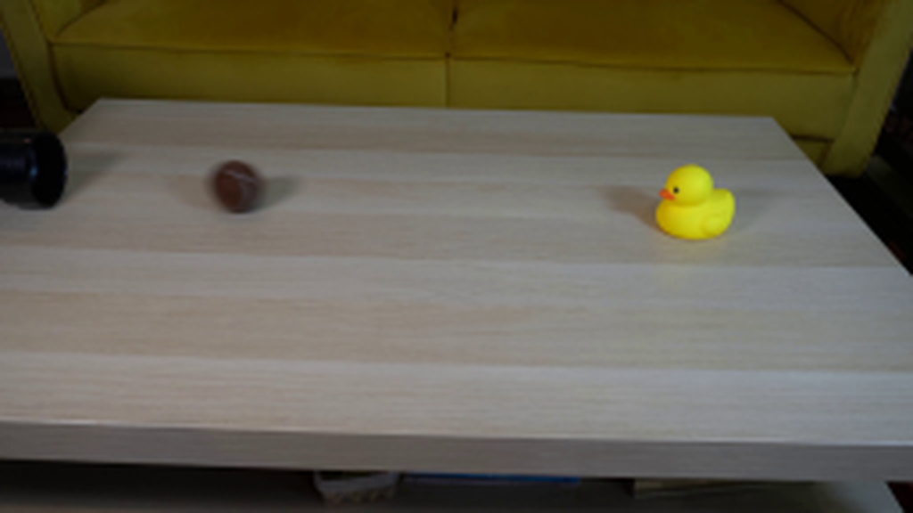
视觉工具实际返回图片 3
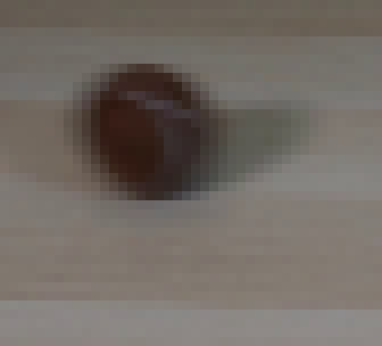
视觉工具实际返回图片 4
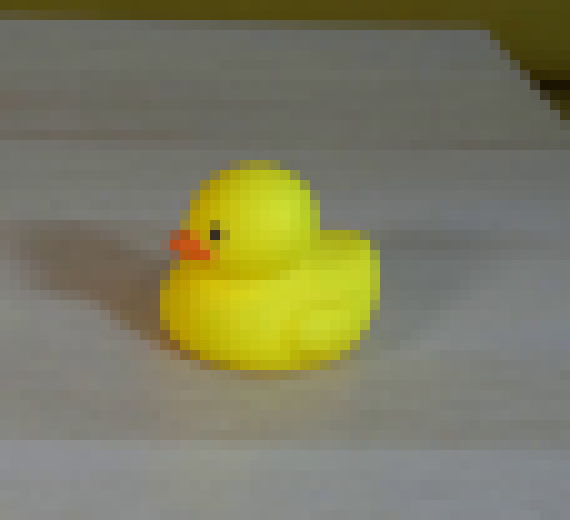
视觉工具实际返回图片 5
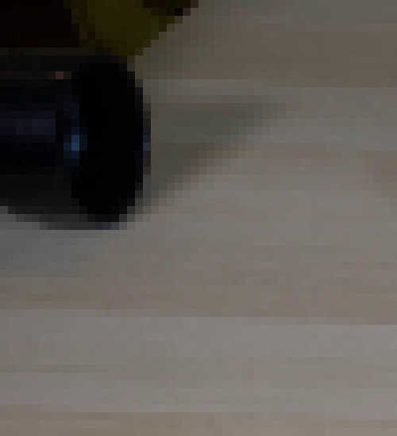
视觉工具实际返回图片 6
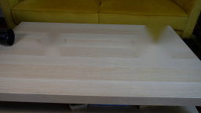
视觉工具实际返回图片 7
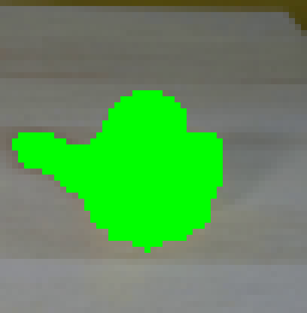
视觉工具实际返回图片 8
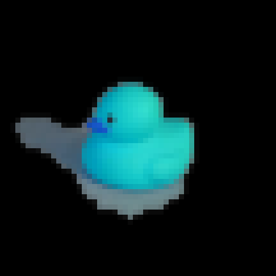
视觉工具实际返回图片 9
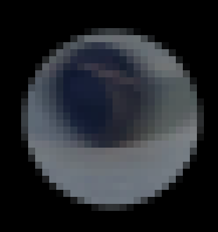
视觉工具实际返回图片 10
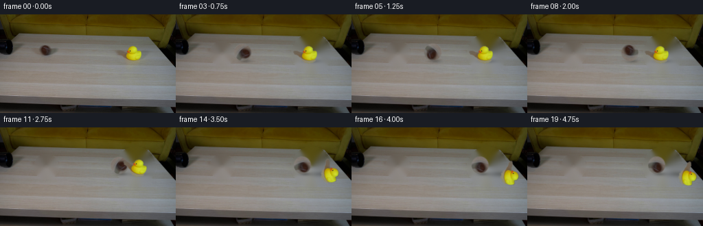
视觉工具实际返回图片 11
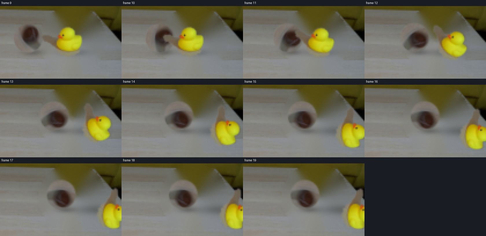
视觉工具实际返回图片 12
视觉工具实际返回图片 13
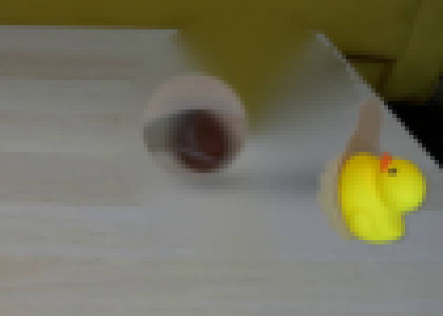
视觉工具实际返回图片 14
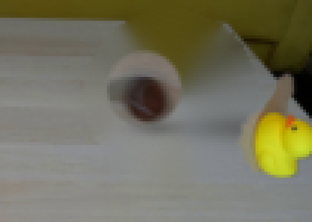
视觉工具实际返回图片 15
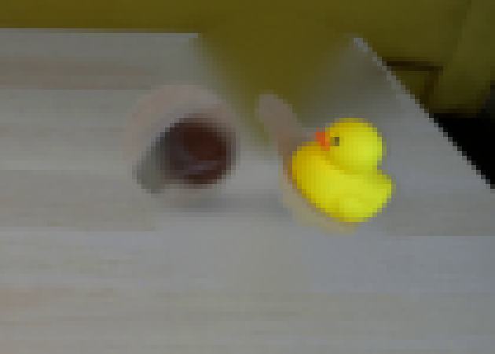
视觉工具实际返回图片 16
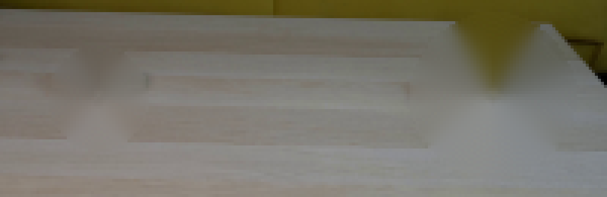
视觉工具实际返回图片 17
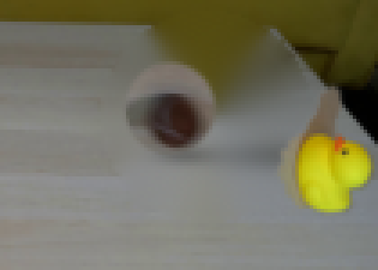
视觉工具实际返回图片 18
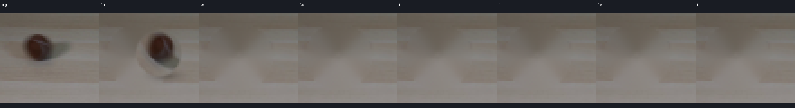
视觉工具实际返回图片 19
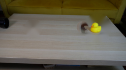
视觉工具实际返回图片 20
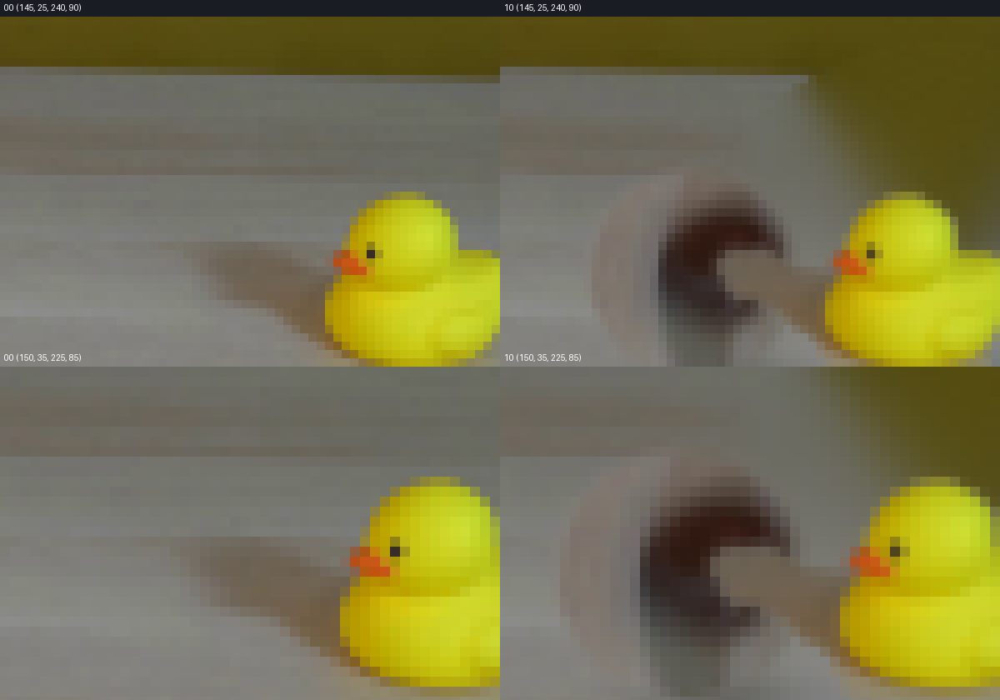
视觉工具实际返回图片 21
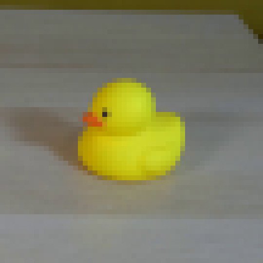
视觉工具实际返回图片 22
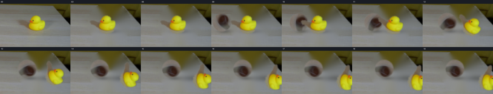
视觉工具实际返回图片 23
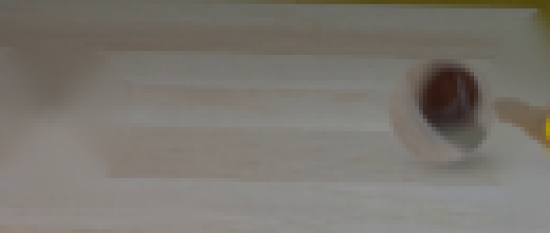
视觉工具实际返回图片 24
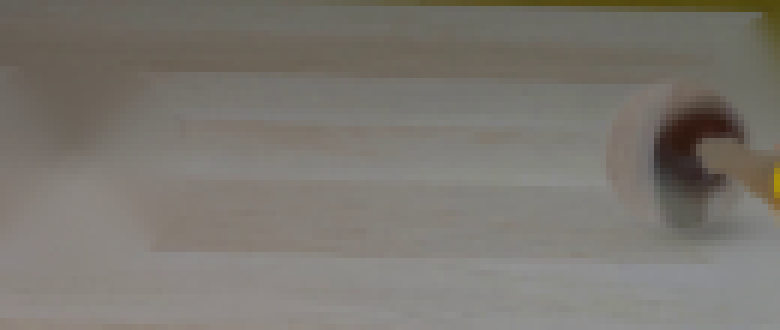
视觉工具实际返回图片 25
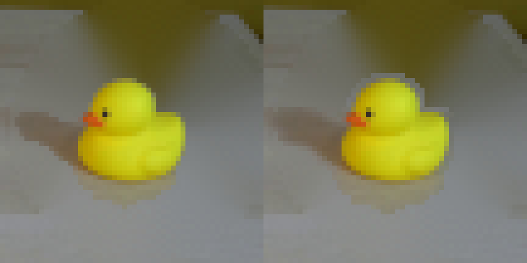
视觉工具实际返回图片 26
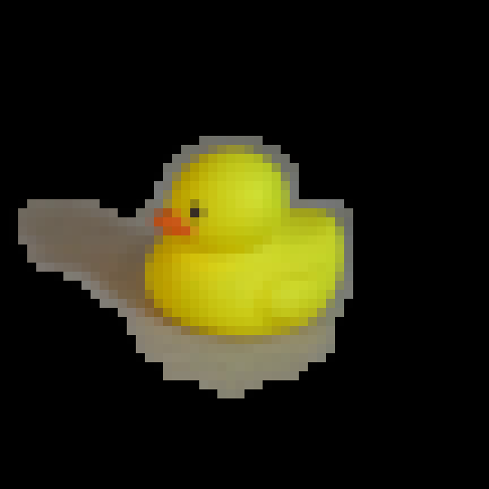
视觉工具实际返回图片 27
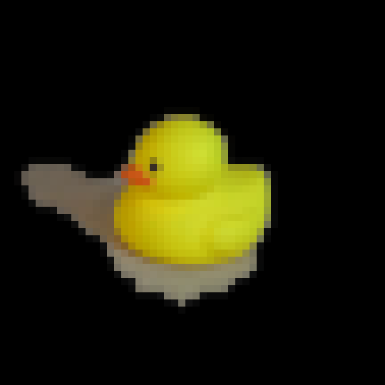
视觉工具实际返回图片 28
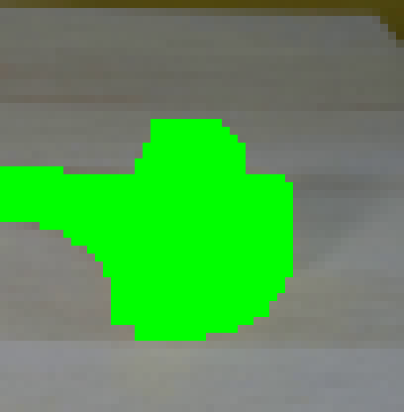
视觉工具实际返回图片 29
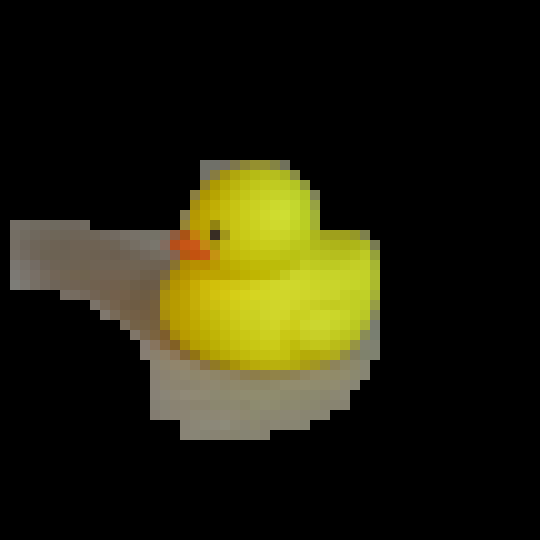
视觉工具实际返回图片 30
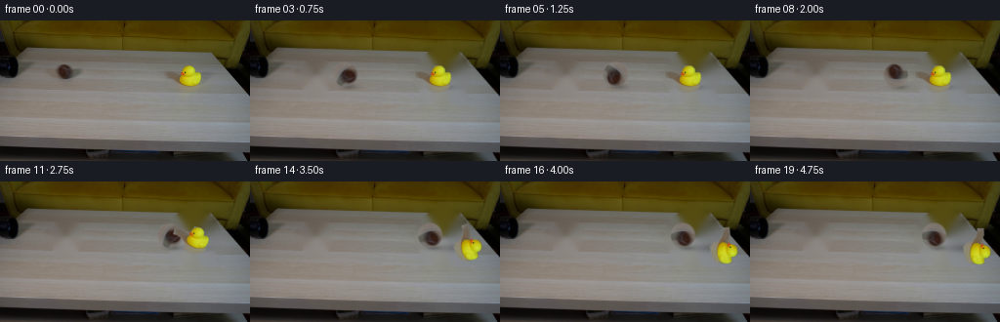
视觉工具实际返回图片 31
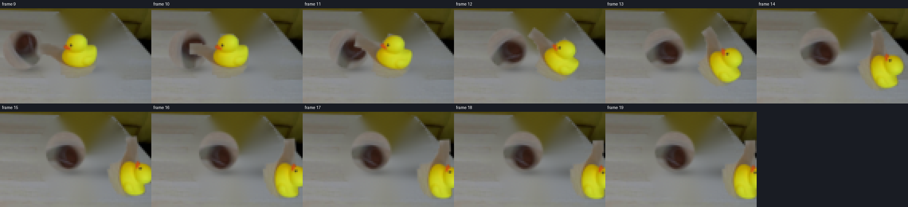
视觉工具实际返回图片 32
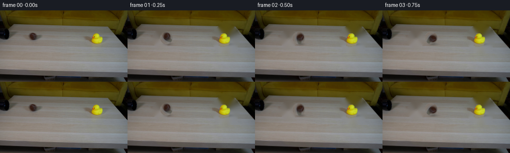
视觉工具实际返回图片 33
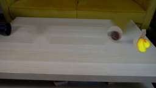
保存候选 3 份；完成命令 43 次；可验证图片返回 33 张。原始 API 响应与完整日志保留在本地。